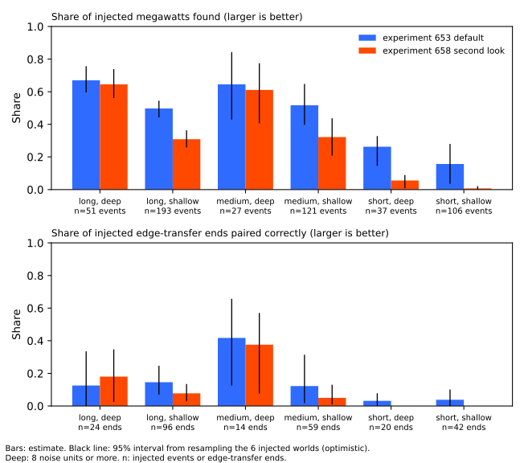
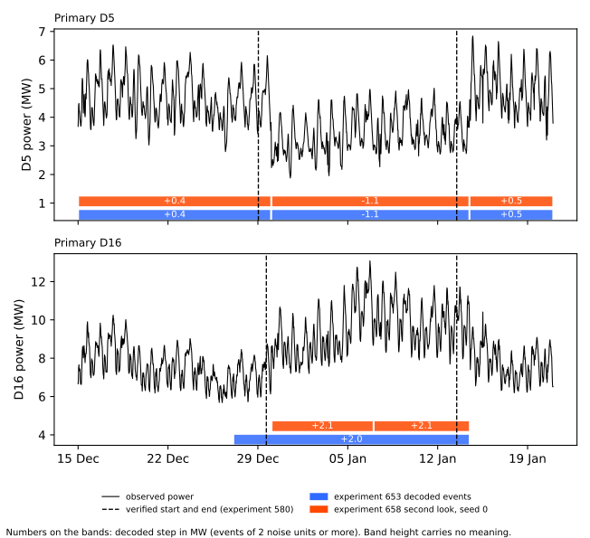
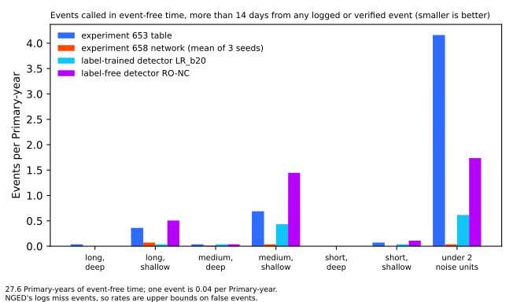

How much of an injected load-shift event does each event-table method find, split by how long the event lasts and how deep the step is?
Where an injected (synthetic) load shift lasts more than 7 days and steps 8 noise units or more, the event table of experiment 653 finds events carrying 0.67 of the injected megawatts and the neural network of experiment 658 finds 0.65. Shallower and shorter shifts are found much less often. A Primary substation steps electricity down to a local distribution network, and the project forecasts the demand at each Primary. A load shift is the switching of part of a circuit from one Primary to a neighbour, which moves demand between the two. The residual is the observed cleaned power minus a demand forecast that uses no lagged power, so a load shift shows as a step in the residual. A noise unit is a Primary's typical difference between successive 6-hour block means, which is between 0.16 and 1.02 MW depending on the Primary.
Experiment 653 built an event table of load shifts by splitting each Primary's residual into segments with a penalised segmentation method. Experiment 658 did the same with a recurrent neural network. Each page reported one recall: 0.64 for the event table and 0.52 for the neural network, where recall is the share of the injected megawatts that belong to an event the method found. This page re-scores their stored outputs on six types of injected event (three lengths times two depths). No XGBoost model was fitted and no neural network was trained.
The event table found 0.67 (95% interval 0.60 to 0.76) of the megawatts in the long and deep type, and the neural network found 0.65 (0.56 to 0.74). Neither method linked the two ends of an injected transfer well in any type: 0.42 was the best, from only 14 transfer ends. On the real record the long and deep type is almost empty. The verdict is partly supported: 3 of the 6 predictions held (P1b, P2, and P5), and P1a, P3, and P4 failed. The hypothesis was only half right: shallow shifts of more than a day are found at 0.50 to 0.52 (event table) and 0.31 to 0.32 (neural network), well above the quarter the hypothesis allowed.
Terms
- Type, or cell. One of six groups of injected events. Long is more than 7 days (including events with no end), medium is more than 1 day up to 7 days, and short is 1 day or less. Deep is 8 noise units or more and shallow is 2 to under 8.
- Injected event, world. A synthetic load shift added to the real residual by experiment 653's injector. A world is one copy of the residual panel with injected events; there are 6.
- Found. An injected event is found when the method has an event at the right Primary and sign with a start within 12 hours (and, for a transfer, the right donor).
- Edge transfer, end, paired. An injected edge transfer moves demand from a donor Primary to a recipient Primary, so it makes a step down at one and a step up at the other. Each step is an end of the transfer. An end is paired when the method links it to the other end of its transfer.
- MW-weighted share. The share of the injected megawatts (absolute value) in events that are found, or in transfer ends that are paired.
- Primary-year. One Primary observed for one year. There are 36.0 Primary-years with a reading in the scored years (2024-01-01 to 2026-06-30, 15 Primaries).
- Stored units and panel depth. The event table and the neural network store each real event's size in noise units (stored units). For logged shifts and detector alarms, this experiment measures the size in the residual instead (panel depth, defined in Method).
- Real record. NGED's measured half-hourly power at the 15 Primaries and its log of load shifts (NGED is National Grid Electricity Distribution, the network operator). The logs miss events.
- LR_b20, RO-NC. The label-trained and label-free detectors of experiment 254: a logistic-regression detector trained on NGED's labels, and the refit-offset neighbour-count detector. Their output is a list of alarms.
- D5, D16, and similar. Anonymised Primary names. A seed is one random start of neural-network training; there are 3.
Figures
The first figure shows that both methods find more in the deep cells than in the shallow ones, and that the neural network falls away fastest for short shifts.

The second figure shows the verified D5 and D16 transfer: both methods decode D5 as a step of -1.1 MW and D16 as +2.0 to +2.1 MW, but their starts differ from the verified starts and neither method pairs the two Primaries.

The third figure shows the events each method calls in time that is more than 14 days from any logged or verified event, which is mostly small steps of under 2 noise units.

Results
-
Injected events: the long and deep type is found best. The table gives the MW-weighted share found, with a 95% interval from resampling the 6 worlds (optimistic with so few worlds). The count is of injected events, with injected edge-transfer ends in brackets.
Type Events (ends) Experiment 653 event table Experiment 658 neural network Long, deep 51 (24) 0.67 (0.60 to 0.76) 0.65 (0.56 to 0.74) Long, shallow 193 (96) 0.50 (0.44 to 0.55) 0.31 (0.26 to 0.36) Medium, deep 27 (14) 0.65 (0.43 to 0.84) 0.61 (0.41 to 0.77) Medium, shallow 121 (59) 0.52 (0.40 to 0.65) 0.32 (0.21 to 0.44) Short, deep 37 (20) 0.26 (0.15 to 0.33) 0.06 (0.01 to 0.09) Short, shallow 106 (42) 0.16 (0.04 to 0.28) 0.01 (0.00 to 0.02) Neural network figures are means of 3 seeds. In the long and deep type the seeds give 0.72, 0.66, and 0.56. Counting each event equally instead of weighting by megawatts, the long and deep share is 0.55 for the event table and 0.57 for the neural network. - Two headline recalls are made of these cells. The reproduction rows (events of 4 noise units or more lasting at least 1 day) hold no short event. The event table's 0.64 is close to its long and deep 0.67. The neural network's 0.52 is lowered by its 0.31 and 0.32 in the shallow long and medium cells. - Paired share of injected edge-transfer ends: low in every type. The best is 0.42, from 14 ends.
Type Ends Experiment 653 event table Experiment 658 neural network Long, deep 24 0.13 (0.00 to 0.34) 0.18 (0.03 to 0.35) Long, shallow 96 0.15 (0.07 to 0.25) 0.08 (0.03 to 0.14) Medium, deep 14 0.42 (0.13 to 0.66) 0.38 (0.08 to 0.57) Medium, shallow 59 0.12 (0.02 to 0.32) 0.05 (0.01 to 0.13) Short, deep 20 0.03 (0.00 to 0.08) 0.00 Short, shallow 42 0.04 (0.00 to 0.10) 0.00 No type has fewer than 20 events or 10 ends, so none is marked too few to read. The medium and deep type, with 27 events and 14 ends, has intervals about 0.4 wide. - Timing in the long and deep type: about half of the events start within 2 hours. A miss counts as a failure. The event table starts within 2 hours for 0.55 of events and the neural network for 0.54, and both end within 6 hours for 0.52. Among found events the median error is 0.0 to 0.5 hours for both methods. - Timing in the long and shallow type: the neural network ends events late. Its end is within 6 hours for 0.16 of events against 0.29 for the event table. Its median end error is 7.3 hours (the mean of per-seed medians of 16, 4, and 2 hours, so noisy), against 1.0 hour for the event table. The median end error leaves out the found events that have no end or a missing end error: 11 events for the event table across the long types, and 7 or 8 per seed for the neural network. - Neither method finds an injected pulse. There are 221 injected pulses of 30 minutes to 2.5 hours and 2 noise units or more, and both methods find 0.00 of their megawatts. - Three of the six predictions held. P1a fails: 0.67 against 0.70 or more, with an interval that reaches 0.76. P1b holds: 0.65 against 0.60 or more. P2 holds in direction for the event table at all 3 lengths (0.67 against 0.50, 0.65 against 0.52, and 0.26 against 0.16), though the intervals of the medium types overlap. P3 fails: the event table finds 0.26 in the short and deep type, against less than 0.25. P4 fails in the medium and deep type (0.42 and 0.38). P5 holds: of the event table's 62 real events that fall in a type by stored units, 56 (90%) are in a shallow type and 1 is in the long and deep type. - On the real record, both methods call few events in the long and deep type. The next table gives events (or alarms) per Primary-year in each type, among the 36.0 Primary-years with a reading in 2024-01-01 to 2026-06-30. The event table and the neural network use their stored units. LR_b20 and RO-NC use panel depth. Alarms and events are different kinds of output of different methods, so the rates are not like for like.
Method Long, deep Long, shallow Medium, deep Medium, shallow Short, deep Short, shallow Experiment 653 event table (246 events) 0.03 0.58 0.11 0.86 0.03 0.11 Experiment 658 neural network, seed 0 (18 events) 0.00 0.28 0.06 0.08 0.00 0.00 LR_b20 (78 alarms) 0.08 0.25 0.25 0.69 0.06 0.06 RO-NC (189 alarms) 0.08 0.94 0.25 1.89 0.11 0.14 Seeds 1 and 2 of the neural network give 0.19 and 0.33 long and shallow events per Primary-year, and 0.14 and 0.08 medium and deep events. - Most real events fall in no type. By stored units 184 of the event table's 246 events are under 2 noise units. By panel depth 181 are. With panel depth the event table has 3, 22, 4, 35, 0, and 1 events in the six types (in the table's column order), so the cell counts depend on how depth is measured. - None of the 77 logged shifts of more than 1 day is in the long and deep type. By panel depth, 7 are long and shallow, 7 are medium and deep, 19 are medium and shallow, 43 are under 2 noise units, and 1 is unmeasured. The next table counts how many each method matched with a start within 2 hours (strict; the loose count, within 24 hours, is in the stored file).
Method Long, shallow (7) Medium, deep (7) Medium, shallow (19) Experiment 653 event table 1 3 2 Experiment 658 neural network, seeds 0, 1, 2 2, 0, 2 2, 4, 3 0, 0, 0 LR_b20 3 6 7 RO-NC 3 6 5 LR_b20 and RO-NC match more logged medium shifts than either of the other two methods, and LR_b20 was trained on the labels. - Event-free time: the event table and RO-NC call far more events than the neural network. The event-free time is 27.6 Primary-years. In the long and deep type the event table calls 0.04 events per Primary-year and the other three methods 0.00. In the medium and shallow type the event table calls 0.69, the neural network 0.00 to 0.07 across seeds, LR_b20 0.43, and RO-NC 1.45. The event table calls 5.1 events per Primary-year of under 2 noise units. Because NGED's logs miss events, these rates are upper bounds on false calls, since an event called where no log entry exists may be real. - Both methods decode D5 and D16 but neither pairs them. The verified transfer lasts 15 days. D5 is 6.6 noise units and D16 is 7.3 (event table) or 7.6 (neural network), just under the deep cut of 8. Both methods decode D5 as -1.1 MW from 30 December 2025 to 14 January 2026, which is 24 hours late at both ends, and D16 as +2.0 to +2.1 MW to 14 January 2026. The event table starts D16 2.6 days early. The neural network starts D16 9.5 hours late in two seeds and 36 hours late in the third. Neither method pairs D5 with D16.
Checks
- Not applicable: median minus mean forecast, tail calibration, curtailment cost, the normalised MAE of the median forecast, and the four scenarios, because no forecast is scored.
- Audit triggers. Trigger 1 (a control fails): the reproduction gates passed. Trigger 2 (a result contradicts its prediction) fired for P1a, P3, and P4. P1a missed by 0.03 with an interval that reaches 0.76, P3 missed by 0.01, and P4's miss rests on 14 edge-transfer ends with an interval of 0.13 to 0.66. These misses are consistent with small cells and do not show a method error. Triggers 3 to 7 do not apply, because the experiment has no forecast contrast, no nested arm, no sister experiment on the same rows, and no later design that rests on it. The numbers review (a fresh Sonnet agent) re-derived the injected-cell, real-record, event-free, and D5 and D16 figures from the raw stored files.
- Unlogged events. NGED's event logs are an incomplete one-off dump, so clean rows may hold events that no label covers. Matched-shift counts are lower bounds.
- Lab shortcuts. The injected events are added to the stored residual and not to the power before the demand model is refitted, so injected recall probably overstates recall on real events. The demand model trained on every row, so earlier real events leak into the residual's baseline.
Reviews and triage
- Plan review (Sonnet). It made 15 findings, 4 of them high: the sign and weight of the injected shares, the coding of permanent events, the reproduction gate's row filter, and the exclusion of pulses. All 15 were accepted and written into the plan before the scoring.
- Code review (Sonnet). It made 8 findings, and none changed an injected-world number. The code
review ran after the first scoring run, not before it, as the plan said it would. Accepted and
fixed: the per-Primary-year denominator, the split of rows in no type into under 2 noise units
and unmeasured depth, the extra measurement of the event table's depth in the residual panel, and
a check that event-free spans end after they start. Accepted as page text: the missing end
errors and the first-seed counts. Not changed: the cosmetic
type: ignorecomments. - Numbers review (Sonnet). It made 8 findings, 1 high. Accepted and fixed: the per-cell rates used the nominal 37.45 Primary-years instead of 36.0 (a bug in the script, fixed and re-run); the claim that short events pull the headline recalls down (the headline rows hold no short event); the count of events missing an end error; the pairing advice item; the deep-minus-shallow range; the short-event wording; the event-free range; and the 184 and 181 counts. All figures in Results match the stored files after the fixes.
- Prose review (Sonnet). It made 59 findings. Accepted: the opening and the Terms section (moved ahead of the figures), the take-home message, the bare "network" and "table", the placeholder in this section, the tables for pairing and matched shifts, the topic-label leads, and the full sentences in Method. Rejected: a rewrite of the next-experiment section into a bare description (it states a proposal, which the plan page owns); the hypothesis text, which stays as pre-registered.
- Figure review (Sonnet). It made 22 findings. Accepted: the event counts and pair counts on the axis, larger text, the band-height note, the experiment 580 label on the verified lines, the "under 2 noise units" group and sample-size note in the third figure, and plain method names in its legend.
What the next experiment should answer
The next experiment should test whether the shallow events of more than a day can be found more often. Both methods find about two thirds of the long and deep megawatts, but the real record holds few such events. Most real events the event table calls are shallow, and in those types the event table finds about half of the injected megawatts and the neural network about a third. LR_b20 and RO-NC also match more of the logged medium shifts than either method.
Method
Architecture and algorithm.
- The event table of experiment 653 (arm
masked, specdefault). The input is the observed cleaned power minus the forecast of the lag-free convex demand model of experiment 130, as stored by experiment 327. It covers 15 Primaries on a half-hourly grid from 2022-01-01 to 2026-06-30, with the median across Primaries removed. A seasonal slow level per Primary is fitted with candidate events masked and then frozen. A dynamic programme (Viterbi, 1967) decodes 6-hour blocks into 25 states (no shift, and 12 log-spaced amplitudes of 1 to 20 noise units in each sign) with a Student-t emission. Events at neighbouring Primaries are paired by sign, start, end, and share. The page of experiment 653 has the full description. - The neural network of experiment 658 (second look, arm
net). A bidirectional recurrent neural network reads all 15 Primaries' residuals and their neighbour links. It has 32 hidden units, dropout 0.3, weight decay 0.01, and Gaussian noise on the inputs. It is trained on experiment 653's injector over 300 worlds of 2022-01-01 to 2023-06-30. Its decoder is tuned on validation worlds of 2023 (boost 10, cut-off 0.5, onset cost 0.5). The page of experiment 658 has the full description. - This experiment. It fits nothing. It assigns each stored injected event, logged shift, event, and alarm to a type by its length and depth, and recomputes the scores per type.
Training regime.
- No training happens here. Experiment 653 trains nothing, and experiment 658 trained a neural network from 3 random starts. This experiment reads their stored outputs and ran on 1 CPU core in a few minutes, with no GPU.
Measurement.
- The injected events are the 6 worlds of experiment 653's injector in its default spec,
scored over 2024-01-01 to 2026-06-30. The rows are events of kind
edge(a transfer between two Primaries),solo(a shift with no partner),permanent_transfer, orpermanent_shift, of 2 noise units or more, in both signs, weighted by absolute megawatts. The hard negatives (ramps, routine steps, and placebo pairs) are excluded, and pulses are reported apart. - A type is set by the injected length and depth. The length comes from the injected
days, where -1 means no end and counts as long. The depth comes from the injectedunits. The cut points are 1 day, 7 days, and 8 noise units. - Found, paired, and timing are scored as the decision rule states. The intervals are 2000 resamples of whole worlds, with the 3 seeds averaged in each draw.
- The real-record events are the stored events of the scored years, with the type taken from stored units. The LR_b20 and RO-NC alarms of experiment 254 (duplicates removed) and the logged shifts of experiment 580 get a panel depth. The panel depth is the absolute difference between the median residual over the 3 days after the onset (or to the end if that comes sooner) and the median over the 3 days before, in noise units, and it needs 48 readings in each window. A logged shift is matched when a method's start at the same Primary lies within 4 half-hours (strict) or 48 half-hours (loose) of the logged onset.
- Event-free time is the set of half-hours with a reading that lie more than 14 days from every labelled or verified event of experiment 580 at the same Primary. A decoded event counts as event-free when none of its half-hours lies in the excluded time.
- The standing practices hold. The data are cleaned, D15 and D18 lose every row before 2025-03-01, and no row from 2026-07-01 onward is read (the script asserts it).
Files
ml-experiments/00665-event-table-recall-by-length-and-depth/e00665_score.py: stageinjectedscores the six types for both methods, runs the reproduction gates, and writesinjected_by_cell.json. Stagerealscores the real record and the event-free time and writesreal_by_cell.json.ml-experiments/00665-event-table-recall-by-length-and-depth/e00665_figures.py: draws the three figures from the two JSON files, the residual panel, and the stored events.- Imported code, read only: the folder of
experiment 653
(
e00653_common.pyfor the panel and grid, ande00653_inject.pyfor the 2019 offset). data/ml-experiments/00665-event-table-recall-by-length-and-depth/:injected_by_cell.json(per type and method: counts, shares, intervals, and timing, plus the pulse row) andreal_by_cell.json(events per Primary-year, logged shifts matched, and event-free rates), written here and never committed.data/ml-experiments/00653-edge-state-event-table-penalised-segmentation/:injected_truth_scored.parquet(one row per injected event and arm, withfound,right_class,start_err_hh,end_err_hh,units, anddays),real_events_masked.parquet, andnoise_units.json(read only).data/ml-experiments/00658-edge-state-event-table-neural-network/:injected_v2main_seed{0,1,2}.parquet,costs_v2main_seed{0,1,2}.json, andreal_events_v2main_seed{0,1,2}.parquet(read only).data/ml-experiments/00254-lsc-alarm-precision-against-full-log-with-chance-base-rate/:alarms_LR_b20.parquetandalarms_RO_b80.parquet(onset, end, and series; read only).data/ml-experiments/00580-verified-load-shift-event-set-and-label-audit/work/:events_labelled_status.parquetandevents_verified.parquet(read only).data/ml-experiments/00327-lsc-label-free-detect-mask-train-pipeline/: the stored power and forecast arrays behind the residual panel (read only).